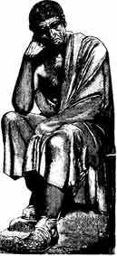

|
|
14 ARISTOTELES 384 SM-322 SM
Nyaris tak
terbantahkan, Aristoteles seorang filosof dan ilmuwan
terbesar dalam dunia masa lampau. Dia memelopori
penyelidikan ihwal logika, memperkaya hampir tiap cabang
falsafah dan memberi sumbangsih tak terperikan besarnya
terhadap ilmu pengetahuan.
Banyak ide-ide Aristoteles kini sudah ketinggalan jaman.
Tetapi yang paling penting dari apa yang pernah dilakukan
Aristoteles adalah pendekatan rasional yang senantiasa
melandasi karyanya. Tercermin dalam tulisantulisan
Aristoteles sikapnya bahwa tiap segi kehidupan manusia atau
masyarakat selalu terbuka untuk obyek pemikiran dan analisa.
Pendapat Aristoteles, alam semesta tidaklah dikendalikan
oleh serba kebetulan, oleh magi, oleh keinginan tak
terjajaki kehendak dewa yang terduga, melainkan tingkah laku
alam semesta itu tunduk pada hukum-hukum rasional.
Kepercayaan ini menurut Aristoteles diperlukan bagi manusia
untuk mempertanyakan tiap aspek dunia alamiah secara
sistematis dan kita mesti memanfaatkan baik pengamatan
empiris dan alasan-alasan yang logis sebelum mengambil
keputusan. Rangkaian sikap-sikap ini --yang bertolak
belakang dengan tradisi, takhyul dan mistik-- telah
mempengaruhi secara mendalam peradaban Eropa.
Aristoteles dilahirkan di kota Stagira, Macedonia, 384
SM. Ayahnya seorang ahli fisika kenamaan. Pada umur tujuh
belas tahun Aristoteles pergi ke Athena belajar di Akademi
Plato. Dia menetap di sana selama dua puluh tahun hingga tak
lama Plato meninggal dunia. Dari ayahnya, Aristoteles
mungkin memperoleh dorongan minat di bidang biologi dan
"pengetahuan praktis". Di bawah asuhan Plato dia menanamkan
minat dalam hal spekulasi filosofis.
Pada tahun 342 SM Aristoteles pulang kembali ke
Macedonia, menjadi guru seorang anak raja umur tiga belas
tahun yang kemudian dalam sejarah terkenal dengan Alexander
Yang Agung. Aristoteles mendidik si Alexander muda dalam
beberapa tahun. Di tahun 335 SM, sesudah Alexander naik
tahta kerajaan, Aristoteles kembali ke Athena dan di situ
dibukanya sekolahnya sendiri, Lyceum. Dia berada di Athena
dua belas tahun, satu masa yang berbarengan dengan karier
penaklukan militer Alexander. Alexander tidak minta nasehat
kepada bekas gurunya, tetapi dia berbaik hati menyediakan
dana buat Aristoteles untuk melakukan
penyelidikan-penyelidikan. Mungkin ini merupakan contoh
pertama dalam sejarah seorang ilmuwan menerima jumlah dana
besar dari pemerintah untuk maksud-maksud penyelidikan dan
sekaligus merupakan yang terakhir dalam abad-abad
berikutnya.
Walau begitu, pertaliannya dengan Alexander mengandung
pelbagai bahaya. Aristoteles menolak secara prinsipil cara
kediktatoran Alexander dan tatkala si penakluk Alexander
menghukum mati sepupu Aristoteles dengan tuduhan menghianat,
Alexander punya pikiran pula membunuh Aristoteles. Di satu
pihak Aristoteles kelewat demokratis di mata Alexander, dia
juga punya hubungan erat dengan Alexander dan dipercaya oleh
orang-orang Athena. Tatkala Alexander mati tahun 323 SM
golongan anti-Macedonia memegang tampuk kekuasaan di Athena
dan Aristoteles pun didakwa kurang ajar kepada dewa.
Aristoteles, teringat nasib yang menimpa Socrates 76 tahun
sebelumnya, lari meninggalkan kota sambil berkata dia tidak
akan diberi kesempatan kedua kali kepada orang-orang Athena
berbuat dosa terhadap para filosof. Aristoteles meninggal di
pembuangan beberapa bulan kemudian di tahun 322 SM pada umur
enam puluh dua tahun.
Aristoteles dengan muridnya, Alexander
Hasil murni karya Aristoteles jumlahnya mencengangkan.
Empat puluh tujuh karyanya masih tetap bertahan. Daftar kuno
mencatat tidak kurang dari seratus tujuh puluh buku hasil
ciptaannya. Bahkan bukan sekedar banyaknya jumlah judul buku
saja yang mengagumkan, melainkan luas daya jangkauan
peradaban yang menjadi bahan renungannya juga tak
kurang-kurang hebatnya. Kerja ilmiahnya betul-betul
merupakan ensiklopedi ilmu untuk jamannya. Aristoteles
menulis tentang astronomi, zoologi, embryologi, geografi,
geologi, fisika, anatomi, physiologi, dan hampir tiap
karyanya dikenal di masa Yunani purba. Hasil karya
ilmiahnya, merupakan, sebagiannya, kumpulan ilmu pengetahuan
yang diperolehnya dari para asisten yang spesial digaji
untuk menghimpun data-data untuknya, sedangkan sebagian lagi
merupakan hasil dari serentetan pengamatannya sendiri.
Untuk menjadi seorang ahli paling jempolan dalam tiap
cabang ilmu tentu kemustahilan yang ajaib dan tak ada
duplikat seseorang di masa sesudahnya. Tetapi apa yang sudah
dicapai oleh Aristoteles malah lebih dari itu. Dia filosof
orisinal, dia penyumbang utama dalam tiap bidang penting
falsafah spekulatif, dia menulis tentang etika dan
metafisika, psikologi, ekonomi, teologi, politik, retorika,
keindahan, pendidikan, puisi, adat-istiadat orang
terbelakang dan konstitusi Athena. Salah satu proyek
penyelidikannya adalah koleksi pelbagai negeri yang
digunakannya untuk studi bandingan.
Mungkin sekali, yang paling penting dari sekian banyak
hasil karyanya adalah penyelidikannya tentang teori logika,
dan Aristoteles dipandang selaku pendiri cabang filosofi
yang penting ini. Hal ini sebetulnya berkat sifat logis dari
cara berfikir Aristoteles yang memungkinkannya mampu
mempersembahkan begitu banyak bidang ilmu. Dia punya bakat
mengatur cara berfikir, merumuskan kaidah dan jenis-jenisnya
yang kemudian jadi dasar berpikir di banyak bidang ilmu
pengetahuan. Aristoteles tak pernah kejeblos ke dalam
rawa-rawa mistik ataupun ekstrim. Aristoteles senantiasa
bersiteguh mengutarakan pendapat-pendapat praktis. Sudah
barang tentu, manusia namanya, dia juga berbuat kesalahan.
Tetapi, sungguh menakjubkan sekali betapa sedikitnya
kesalahan yang dia bikin dalam ensiklopedi yang begitu
luas.
Pengaruh Aristoteles terhadap cara berpikir Barat di
belakang hari sungguh mendalam. Di jaman dulu dan jaman
pertengahan, hasil karyanya diterjemahkan ke dalam
bahasa-bahasa Latin, Arab, Itali, Perancis, Ibrani, Jerman
dan Inggris. Penulis-penulis Yunani yang muncul kemudian,
begitu pula filosof-filosof Byzantium mempelajari karyanya
dan menaruh kekaguman yang sangat. Perlu juga dicatat, buah
pikirannya banyak membawa pengaruh pada filosof Islam dan
berabad-abad lamanya tulisan-tulisannya mendominir cara
berpikir Barat. Ibnu Rusyd (Averroes), mungkin filosof Arab
yang paling terkemuka, mencoba merumuskan suatu perpaduan
antara teologi Islam dengan rasionalismenya Aristoteles.
Maimomides, pemikir paling terkemuka Yahudi abad tengah
berhasil mencapai sintesa dengan Yudaisme. Tetapi, hasil
kerja paling gemilang dari perbuatan macam itu adalah Summa
Theologia-nya cendikiawan Nasrani St. Thomas Aquinas. Di
luar daftar ini masih sangat banyak kaum cerdik pandai abad
tengah yang terpengaruh demikian dalamnya oleh pikiran
Aristoteles.
Kekaguman orang kepada Aristoteles menjadi begitu
melonjak di akhir abad tengah tatkala keadaan sudah mengarah
pada penyembahan berhala. Dalam keadaan itu tulisan-tulisan
Aristoteles lebih merupakan semacam bungkus intelek yang
jitu tempat mempertanyakan problem lebih lanjut daripada
semacam lampu penerang jalan. Aristoteles yang gemar
meneliti dan memikirkan ihwal dirinya tak salah lagi kurang
sepakat dengan sanjungan membabi buta dari generasi
berikutnya terhadap tulisan-tulisannya.
Beberapa ide Aristoteles kelihatan reaksioner diukur
dengan kacamata sekarang. Misalnya, dia mendukung perbudakan
karena dianggapnya sejalan dengan garis hukum alam. Dan dia
percaya kerendahan martabat wanita ketimbang laki-laki.
Kedua ide ini-tentu saja --mencerminkan pandangan yang
berlaku pada jaman itu. Tetapi, tak kurang pula banyaknya
buah pikiran Aristoteles yang mencengangkan modernnya,
misalnya kalimatnya, "Kemiskinan adalah bapaknya revolusi
dan kejahatan," dan kalimat "Barangsiapa yang sudah
merenungi dalam-dalam seni memerintah manusia pasti yakin
bahwa nasib sesuatu emperium tergantung pada pendidikan
anak-anak mudanya." (Tentu saja, waktu itu belum ada sekolah
seperti yang kita kenal sekarang).
Di abad-abad belakangan, pengaruh dan reputasi
Aristoteles telah merosot bukan alang kepalang. Namun, saya
pikir pengaruhnya sudah begitu menyerap dan berlangsung
begitu lama sehingga saya menyesal tidak bisa menempatkannya
lebih tinggi dari tingkat urutan seperti sekarang ini.
Tingkat urutannya sekarang ini terutama akibat amat
pentingnya ketiga belas orang yang mendahuluinya dalam
urutan.
|